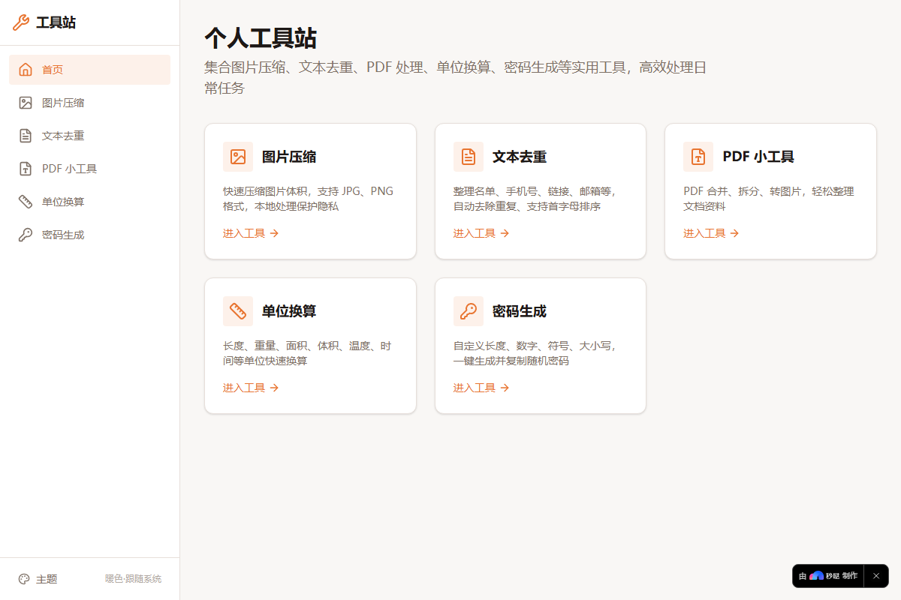
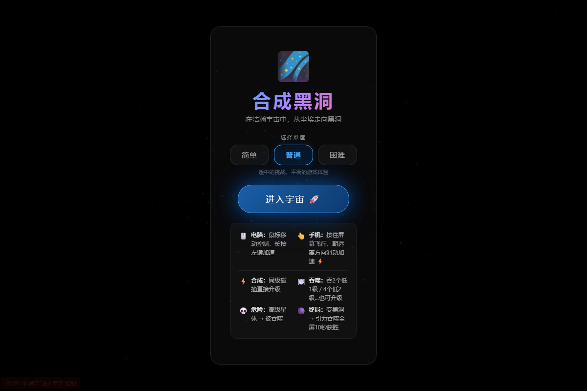
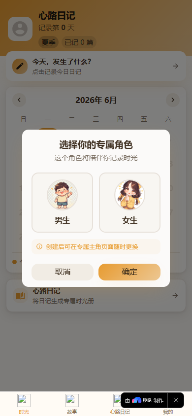
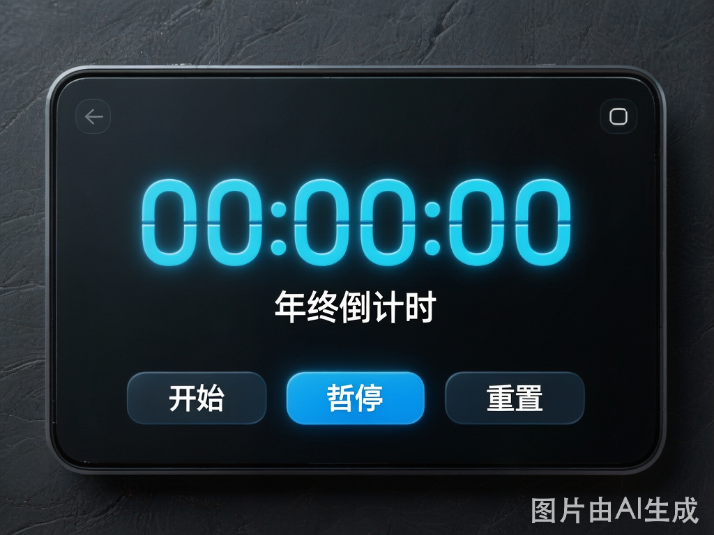
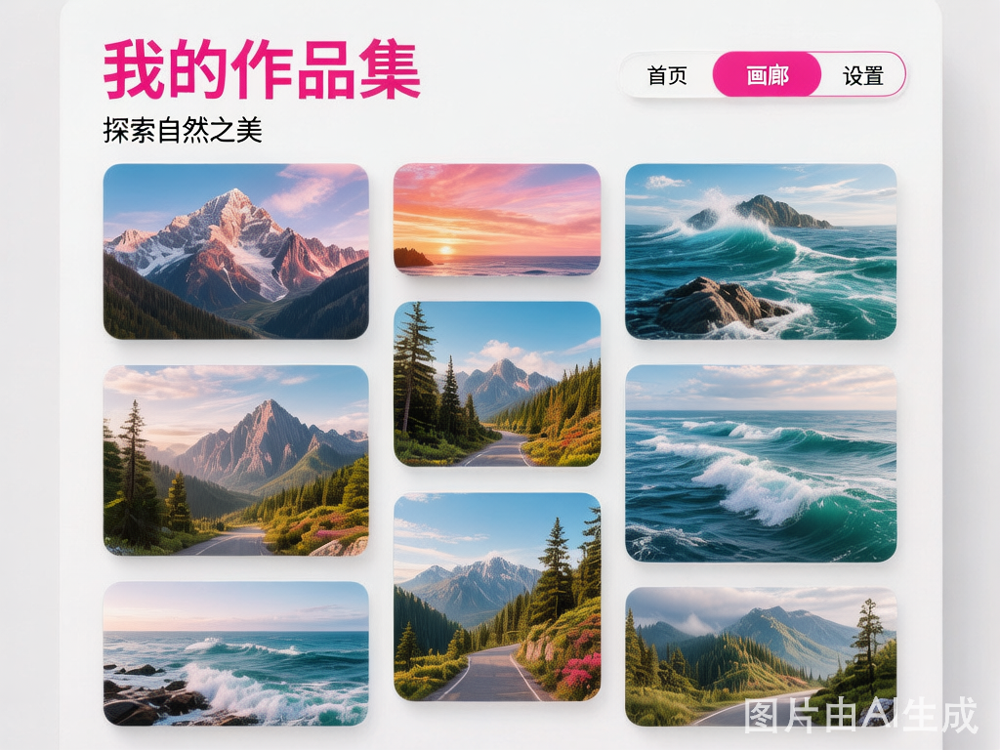
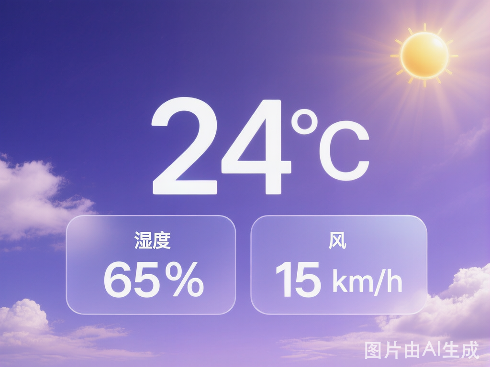

我正在学习使用秒哒、WorkBuddy、Codex、Claude Code 等工具制作网站和小程序。
这个网站是我的第一个线上练习场，用来记录学习进度、展示小作品，也见证我从新手慢慢变熟练的过程。
每一个小知识点、每一次工具尝试、每一个小页面都会变成一个可见的练习。这里记录我从想法到网站、小程序作品的学习过程。
了解网页由结构、样式和交互组成，能看懂基础页面文件。完成首个页面骨架搭建。
正在练习使用秒哒、Codex等工具，把想法变成可预览的网页或小程序原型，调试提示词。
准备制作个人主页、活动页、工具页面、小程序页面等小作品，增加交互体验。
计划把网站部署到 GitHub Pages 或 Vercel，让别人可以通过公共链接访问我的作品。
这些作品可能还很简单，但每一个都对应一个我正在学习的知识点、一次工具尝试，或者一个网页组件练习。




输入一个目标日期，页面会显示距离目标时间还有多少天、时、分、秒，适合作为网页或小程序练习。

一个简单的图片展示页面，用来练习图片布局、内容展示、移动端适配，也可以改成作品集。

展示城市、天气、温度的卡片，第一版写固定内容，后续尝试接入天气 API 或改成小程序页面。
我会把学到的内容、踩过的问题和下一步计划记在这里。以后回头看，也能看到自己是怎么一点点进步的。
零基础开始学习用秒哒做网页，把一个小练习整理成作品卡片，包含作品名称、说明、使用工具、状态和查看按钮。
尝试用 AI 工具辅助生成网页小游戏，从零搭建游戏逻辑和交互界面。
在做了网页和小游戏之后，尝试做小程序，一边学一边搭页面和功能。
尝试把 Gmail 和 Codex 串联起来，让两个工具配合完成任务，还接入了 API。
在这段时间里使用了好几款工具，包括 Claude Code、Codex、DeepSeek 等，不断尝试和比较。
完成第一个网页
已完成完成第一个小程序
已完成完成第一个小游戏
已完成完成第二个网页
已完成持续更新练习项目
小贴士： 每做完一个网站、小程序或练习，记得随时更新到作品区，保持成长可见！